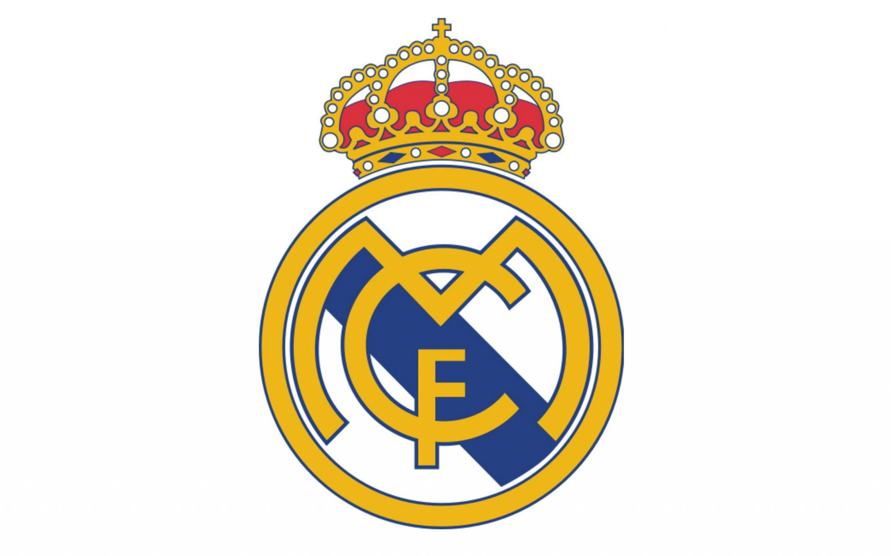
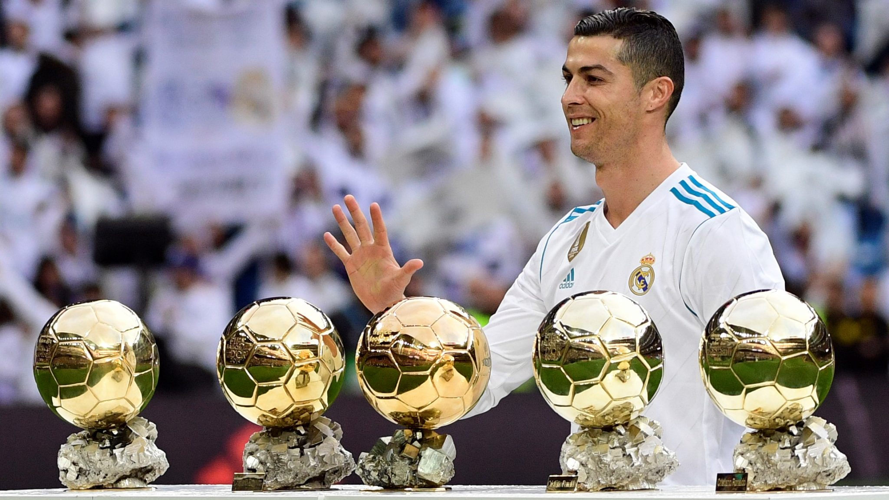
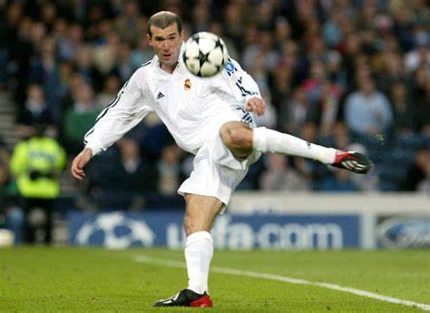

The history of football (soccer)
>Football (or soccer as the game is called in some parts of the world) has a long history. Football in its current form arose in England in the middle of the 19th century. But alternative versions of the game existed much earlier and are a part of the football history

It is very difficult to say which is the best football team in the world. The argument will never be settled, nor is there a definite answer.
The debate can never stop, and the different factions will never agree because football cannot be truly, definitively conquered by a team.
But for this post, TOPSOCCERBLOGs criteria for selecting the best teams revolves around current standing in domestic and continental competitions. Also taken into account is the strength of leagues and tournaments.

First of all we will start the best team in the history Real Madrid grew out of Football Club Sky, a team formed in Madrid in 1897. The club was officially founded in 1902 and joined the Royal Spanish Football Federation in 1909. Real Madrid played at a variety of venues until ambitious club president Santiago Bernabéu spearheaded the construction of the stadium that bears his name. Opened in 1947, the Bernabéu holds more than 80,000 spectators and was the venue for the 1982 Fédération Internationale de Football Association (FIFA) World Cup final.
top players in real madrid

Cristiano Ronaldo was born on February 5, 1985 in Hospital Dr. Nélio Mendonça, Funchal, Portugal. His current age 37 years. His Father’s Name is José Dinis Aveiro and mother’s name is Maria Dolores dos Santos Aveiro./ Cristiano Ronaldo height 6 feet 1 inches (185 cm/ 1.8 m) and Weight 80 kg (176 lbs).Ronaldo is the best player who played in Real madrid and he is Scorer Real madrid also he won 4 ballon dor with real madrid and he won
4 golden boot and won the liga 2 times and the ulc 5 times and won the man of the match 122 times with real madrid

Zinedine Yazid Zidane (French: Zinédine Yazid Zidane; born 23 June 1972), popularly known as Zizou, is a French professional football manager and former player who played as an attacking midfielder. He most recently coached Spanish club Real Madrid and is one of the most successful coaches in the world.
Date of birth: 23 June 1972 (age 50)
Full name: Zinedine Yazid Zidane
Height: 1.85 m (6 ft 1 in)
Place of birth: Marseille, France
Zinedine Yazid Zidane, popularly known as Zizou, is a French professional football manager and former player who played as an attacking midfielder. He most recently coached Spanish club Real Madrid and is one of the most successful coaches in the world. Widely regarded as one of the greatest players of all time, Zidane was a playmaker renowned for his elegance, vision, passing, ball control, and technique. He received many individual accolades as a player, including being named FIFA World Player of the Year in 1998, 2000 and 2003, and winning the 1998 Ballon d'Or.
back to main page